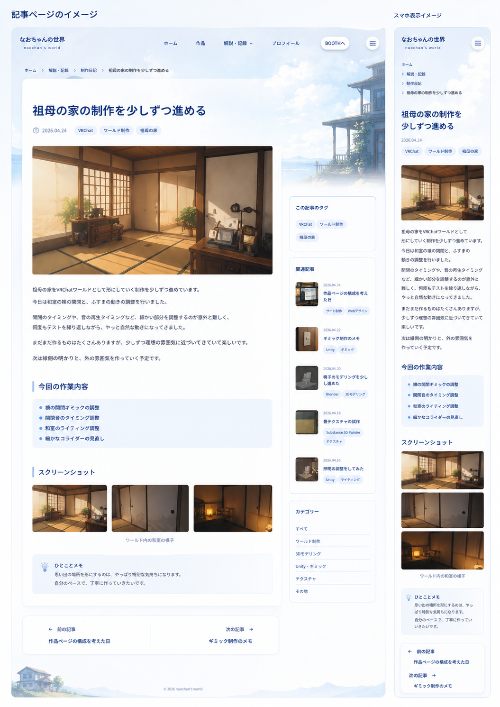
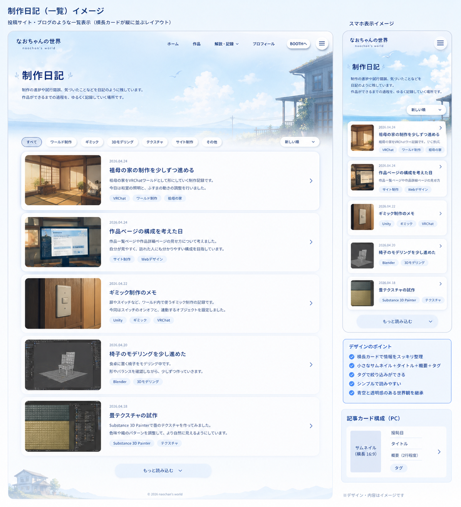

初めまして、なおちゃんです。 これがこのサイトで最初の制作日記になります。 まだ整っていないところも多いですが、少しずつ自分の創作世界を形にしていく場所として、このサイトを作り始めました。
2022年くらいから3Dモデリングを少しずつ始めました。 仕事として目指したい気持ちもありましたが、実力や勇気など、いろいろ足りないと感じることも多くて。 今は普通の社会人としてSEをしながら、自分のペースで創作を続けています。
このサイトは、ChatGPTでページの完成イメージ画像を作り、それをもとにCursorやCodexのようなAIエージェントに実装を手伝ってもらいながら作っています。 AIに全部任せるというより、画像で方向性を見える形にしてから、一緒にHTML・CSS・JSへ落とし込んでいく感覚です。
今回の完成イメージ
下の2枚は、ChatGPTで作った制作日記ページの完成イメージです。 画像があるとないとでは、AIエージェントに伝わる情報量がかなり変わります。 言葉だけで「青空っぽく、透明感があって、読みやすい感じ」と伝えるよりも、完成イメージがあるほうが、余白やカードの密度、スマホでの見え方まで共有しやすくなります。


作業の流れ
- ChatGPTでページの完成イメージ画像を作る
- 画像を見ながら、必要な要素や雰囲気を言葉にする
- CursorやCodexにHTML / CSS / JSとして実装してもらう
- 実際の画面を見て、違和感があるところを直していく
画像があると助かったところ
完成イメージ画像があると、実装の品質が大きく変わると感じています。 文章だけだと、どうしても人によって受け取り方が変わります。 でも画像があると、「この空気感」「この余白」「このカードの大きさ」といった目標を共有しやすく、修正もしやすくなります。
気をつけていること
画像どおりに作ることだけを目的にしないことです。 実際のサイトでは読みやすさやリンクの分かりやすさも大事なので、完成イメージを参考にしつつ、必要なところは自分の目で見て調整しています。 まだ自信があるとは言えませんが、AIに助けてもらいながらなら、止まらずに少しずつ進める気がしています。